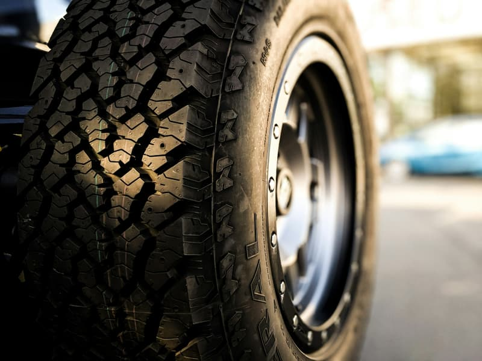

Car repair garage / Kielce
A car garage in Malików
Servicing, diagnostics and repairs. We tell you what needs doing before we do it.
- Address
- Malików 111A
- Google rating — 118 reviews
- 4,8
- Contact
- 794 404 377
01
What we do
A general description. The exact range, specialisms and makes we work on get filled in after speaking with the garage.
Servicing and diagnostics
Checking the state of the car and working out what actually needs repairing.
quoted after diagnosisMechanical repairs
Running repairs and component replacement. The exact range still needs pinning down.
quoted after diagnosisScheduled maintenance
Fluids and consumables replaced according to mileage.
quoted after diagnosisQuotes Quoted after looking at the car. A figure off a price list without a diagnosis is guesswork, and what a garage customer hates most is a surprise on the invoice.
02
118 reviews and a 4.8 rating — a garage people recommend
MK Auto-Serwis is at Malików 111A in Kielce. 118 reviews at 4.8, in a trade where people rate harshly, speaks for itself.
Garages rarely have websites, and a driver with a breakdown searches Google and rings the first number that looks trustworthy.
This page shows the address, the route and the phone number straight away — no scrolling through Facebook groups.
- 4.8 from 118 Google reviews
- Servicing, diagnostics and repairs
- Quoted after looking at the car
- Malików 111A, Kielce
03
The workshop up close



Illustrative photography under a free licence (Unsplash). Full list of photographers and sources: CREDITS.md.
04
Book the car in
Opening hours
Hours still need confirming with the owner — the Google listing has none.
Address
Malików 111A, 25-639 Kielce
Ring and describe the symptoms — we will agree a time and what to check first.